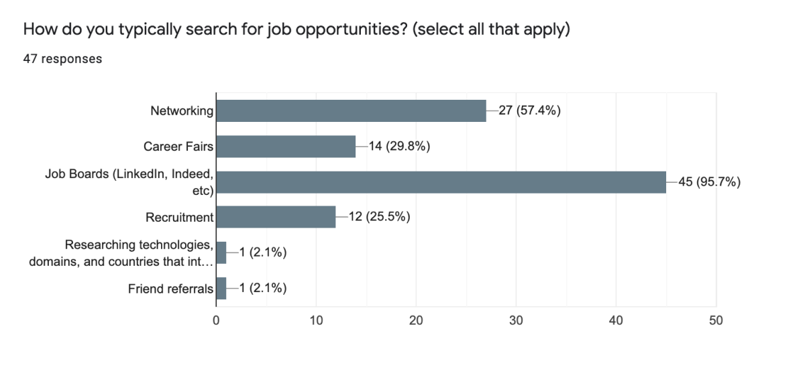
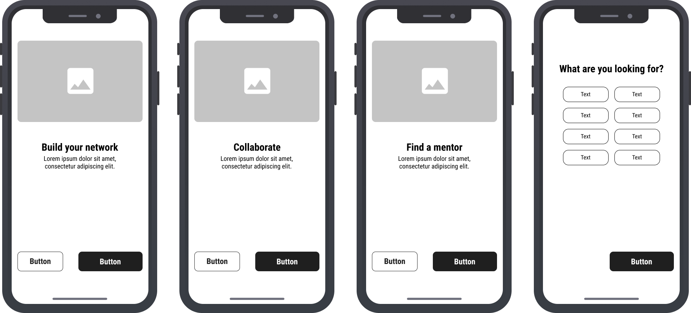
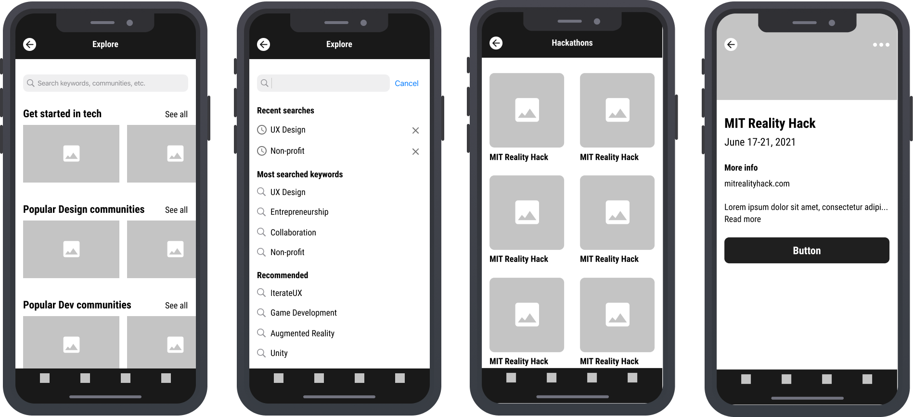
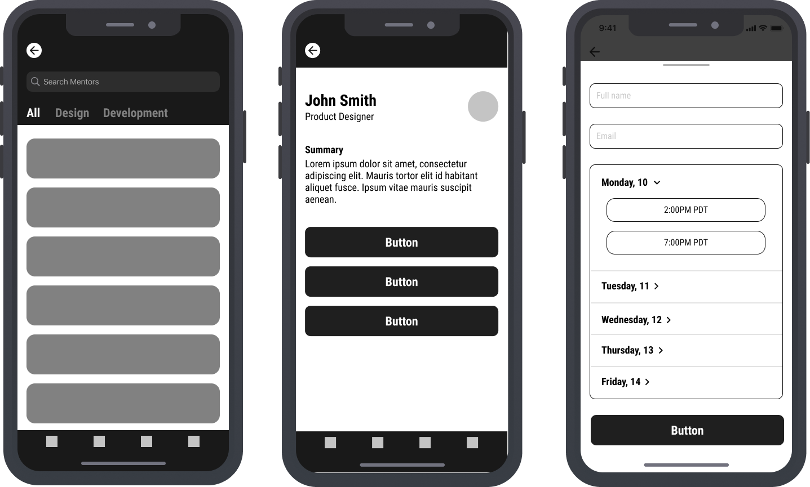
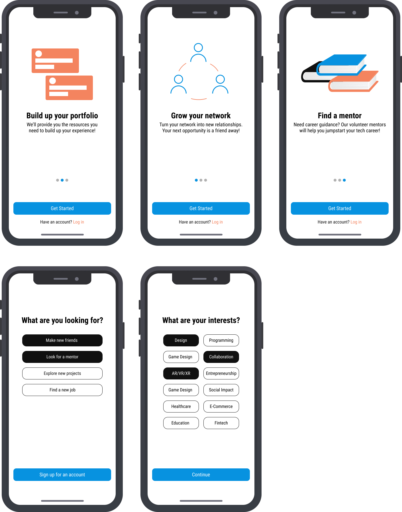
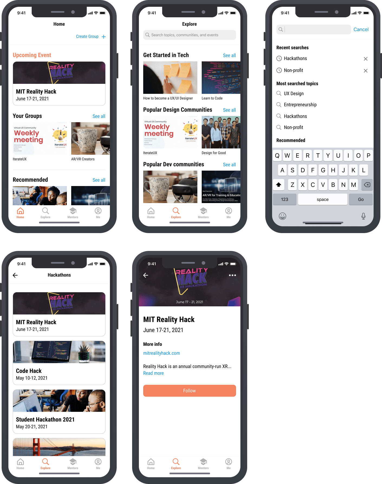
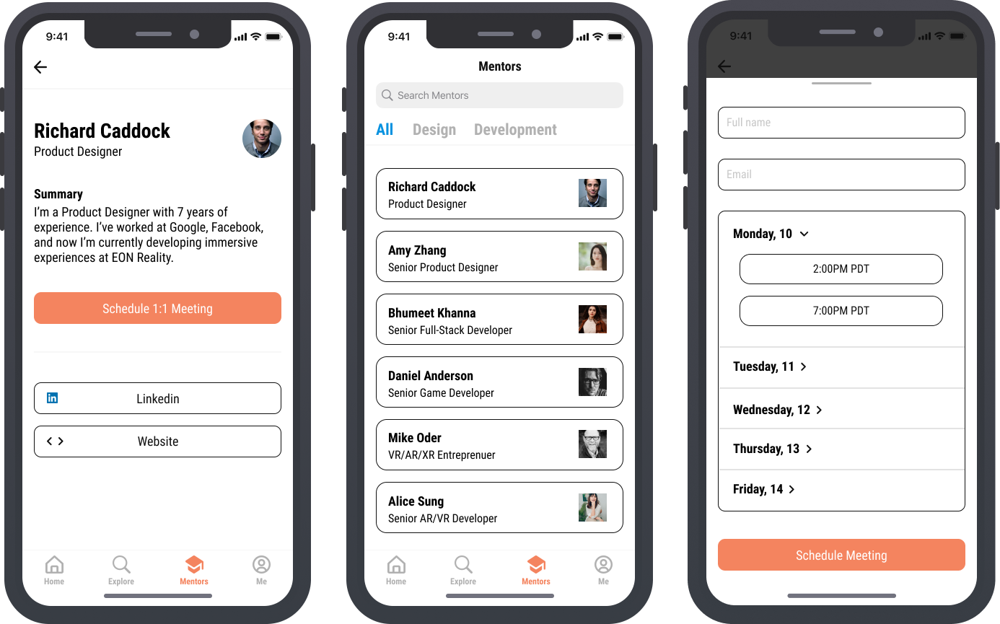

Jumpstart a career in tech
As the tech industry continues to thrive and remote working is here to stay, more people with different backgrounds
are looking to begin a career in tech. In addition, students are graduating with degrees in design and programming.
But... many don’t know how to begin.
I went through a UX journey of identifying the obstacles of starting a new career and designing a mobile application
that provides career counseling and resources to get people started in tech.
Project: Career counseling
Team: I’m alone 😔
Timeline: 1 week | May, 2021
Role: UX/UI, Strategy
Tech: Figma, Principle
New graduates and people transitioning from another field often invest a lot of time seeking answers by
digging through online articles or trying to find clear direction from experienced creatives.
Moreover, there is an abundance of online design and development communities filled with people with years of first-hand
experience who want to educate and help new creatives get started in tech. However, these communities are hidden from
standard Google searches and must be found through a thorough search on social networking platforms or word-of-mouth.
ONBOARDING
Set up your new career in just a few clicks.
First time users will go through a short and simple onboarding, where they fill in information on what they want to achieve in their careers.
This will help us recommend relevant resources as you continue using the app.
EXPLORE
One opportunity leads to another.
Your time is our time. So we designed our search engine to easily find all the resources you may need, from online guides to Discord communities.
Also, we’ll regularly send you resource links and invites to new and popular online communities, that are relevant to your interests.
MENTORSHIP
Need a mentor? We have you covered.
Last, but not least, we’ve partnered with experienced indivdiuals in tech who are available to mentor. Want to become a UX Designer?
We have someone we would like you to meet.
SECONDARY RESEARCH
The benefits of career guidance
In my research, I needed to understand the steps people follow when seeking career guidance.
If I could gather relevant information from existing sources it would align the product closer to user needs.
Mentorship
Finding a mentor was the most essential step for people who want to start a career in tech. What better way to gain insight from someone who’s has achieved success in that particular field?
Mentors are a living source of knowledge who offer mentees education, feedback, an ally, and a network. I noted this information, so I could apply it to the design.
PRIMARY RESEARCH
Learning from people’s experiences
I conducted an online survey with over 40 responses to gain insight on who’s experiencing this problem of feeling lost in the beginning of their careers.
Online survey results
My responses were a mix of graduating students and people who have switched into tech from another field and what I found is that they’re struggling to land opportunities due to their lack of experience.
However, while these people understand they lack experience, they don’t know about alternative methods to build and create their value.
“I think just being new to the field - I'm seen as unproven or else with my legal background people wonder why I'm switching.”
- Survey response
“My lack of experience in this field. I don't know what job routes I'm not exploring, or what questions are obvious that I'm not preparing for in interviews.”
- Survey response
User insight
Additional information I found in my survey was 96% of my responses heavily rely on job boards to find opportunities, while 57% find opportunities through networking.
I kept this information in mind to see if a networking feature could also be implemented into the design.

USERFLOW
Ideating the experience
After gaining valuable insight from my survey, I went ahead to craft the experience that would align to user needs.
Wireframe direction

Wireframe direction of the onboarding process.

Wireframe direction of the home screen and additional screens of the search menu and event pages.

Early concept of the mentorship feature.
PROTOTYPE & TEST
Final designs and testing
After iterating, I landed on a userflow and a design layout that I believed was visually clean and aligned with user needs.
View the prototype

Onboarding
New users go through a quick onboarding process where they learn about the app and are required to address their interests and career goals.
In theory, the app would use this information to recommend relevant resources that match a user's interests.

Home and explore features
Users can explore online design and dev communities, events, and workshops through an optimized search engine.
In the explore menu, the "Get Started in Tech" section is a crucial feature that shares upcoming workshops and events from online communities
that host these networking opportunities to help their members learn from established individiuals with years of first-hand experience.

Mentorship
This feature wasn't originally a part of the user flow, but user feedback suggested it as they believed it could be another resource
found on the same app, without needing to use another platform.
100%
Task completion rate
30-45 seconds
Average navigation rate
"The experience flows well and it seems very resourceful."
- Tester feedback
CONCLUSION
Reflection & Learnings
This project improved my UI Design skills and my understanding of Apple's Human Interface Guidelines. In addition, I learned new methods to acquire feedback and using it to develop visual solutions.